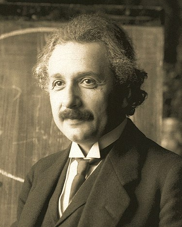

 З дитинства Альберт Ейнштейн зростав замкнутим і нетовариським і не демонстрував яких-небудь значних успіхів в школі. Поширеною є думка, що в дитинстві Ейнштейн був не здібний до навчання. Як докази наводяться низькі показники, які він демонстрував у школі, а також той факт, що майбутній геній вельми пізно почав ходити і говорити. Проте така точка зору заперечується багатьма дослідниками біографії Альберта Ейнштейна. Навчаючись в Луїтпольській гімназії, Альберт Ейнштейн вперше зайнявся самоосвітою: у 12-річному віці 1891 року він почав самостійно вивчати математику за допомогою шкільного підручника з геометрії. Хоча часто стверджується, ніби Ейнштейн був некомпетентним у математиці, але це також не відповідає дійсності. У гімназії він уже був у числі перших учнів з точних наук, проте укорінена система механічного заучування матеріалу, яка, як він сам вважав, завдає шкоди самому духу навчання і творчому мисленню, як і відносно тиранічне ставлення вчителів до учнів, викликало в Альберта Ейнштейна несприйняття, тому він часто сперечався зі своїми викладачами, що продовжували вважати його безперспективним учнем.
| Статус | Рік | Відзнака |
|---|---|---|
| За життя | 1921 | Нобелівська премія |
| Посмертно | 1992 | Названий №10 в підготовленому Майклом Хартом списку найвпливовіших осіб в історії |
| Посмертно | 1999 | журнал «Тайм» назвав Ейнштейна «Особистістю століття» |
| Посмертно | 1999 | Gallup Poll навів Ейнштейна під №4 в списку найшанованіших у XX столітті людей |
| Посмертно | 2005 | 2005 рік був оголошений ЮНЕСКО роком фізики з нагоди століття «року чудес», що увінчався відкриттям спеціальної теорії відносності Ейнштейном |
Наведіть курсор на прямокутник градіенту для анімації.